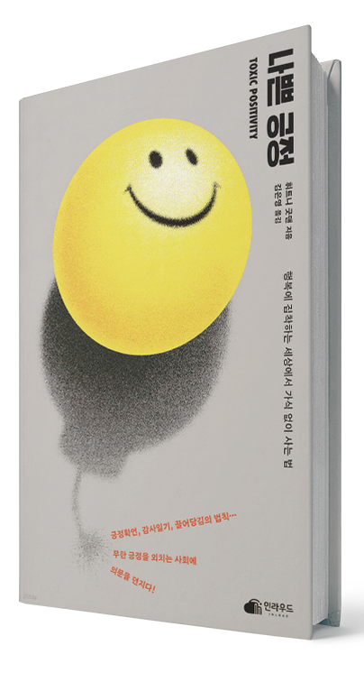

글. 편집실
완벽한 긍정보다
온전한 나를 선택하세요.
현대사회는 우리에게 ‘항상 긍정적이어야 한다’는 압박을 끊임없이
주입합니다. SNS에는 완벽한 삶의 이미지가 넘쳐나고, 자기계발서는
‘긍정의 힘’만을 강조합니다. 하지만 이렇게 강요된 긍정은 오히려 우리를
더 불행하게 만드는 독이 될 수 있습니다.
미국에서는 이러한 현상을 ‘독성 긍정성(toxic positivity)’이라 부릅니다.
슬픔, 분노, 불안 같은 부정적 감정을 억누르고 표면적인 행복만을
추구하는 태도는 정신건강에 심각한 해를 끼칩니다. 한국 사회는 특히 체면
문화와 집단주의가 결합하여 독성 긍정의 영향력이 강합니다. 직장에서의
“다 괜찮다”, “웃어 넘기면 될 일”이라는 무의미한 격려, 심지어
가족끼리도 감정 표현을 꺼리는 ‘눈치 문화’까지. 이런 문화는 실질적 문제
해결보다 감정 억압을 조장합니다.
진정한 행복을 찾기 위해서는 모든 감정을 균형 있게 인정하고 수용하는
법을 배워야 합니다. 부정적 감정도 우리 삶의 소중한 일부이며, 이를 통해
우리는 성장합니다. 외면과 억압을 멈추고 다양한 감정을 있는 그대로 만날
때, 우리는 비로소 자신과 타인에게 진실된 모습으로 다가갈 수 있습니다.
무조건 행복해야 한다는 강박을 내려놓는 순간, 역설적으로 진정한 행복이
찾아옵니다.
휘트니 굿맨
<나쁜 긍정>
저자는 심리학자로서 ‘항상 행복해야 한다’는 현대사회의 강박적 긍정
문화를 날카롭게 분석한다. 실제 상담 사례를 통해 무조건적 긍정이
오히려 더 큰 심리적 고통을 유발하는 과정을 보여준다. 특히 MZ세대
사이에서 유행하는 ‘긍정 확언’, ‘챌린지’등이 어떻게 독성 긍정으로
변질될 수 있는지 경고하며, 진정한 정신건강을 위해서는 모든 감정을
균형 있게 인정해야 한다고 강조한다. 무조건 밝아야 한다는 강박에
지친 이들에게 “괜찮지 않아도 괜찮다”라는 메시지를 전한다.
